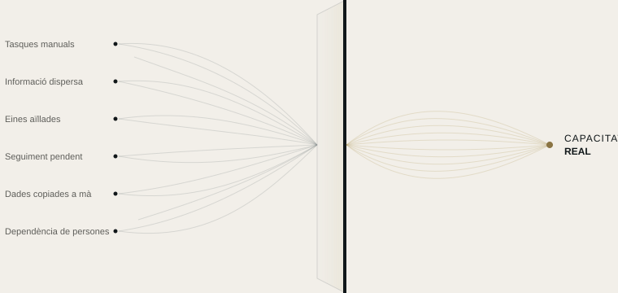

Automatització
Convertim les tasques repetitives en processos automàtics, amb les regles que definim amb tu.
AUTOMATITZACIÓ DE RECURSOS
La majoria d'empreses no necessiten més eines. Necessiten saber per on se'ls escapa el temps, la informació i l'atenció.
SKURX SYSTEMS identifica on es perd capacitat i la converteix en sistemes de treball més clars, connectats i eficients.
QUÈ FEM
Detectem on perd capacitat la teva empresa i l'alliberem amb automatització, eines connectades i intel·ligència artificial aplicada allà on té sentit.

ELS NOSTRES SERVEIS
Convertim les tasques repetitives en processos automàtics, amb les regles que definim amb tu.
Per al que una regla no resol: la IA potencia el teu equip, no el substitueix.
Connectem les teves eines perquè la informació passi de l'una a l'altra sense que ningú hi intervingui.
COM HO FEM
No partim d'una tecnologia, sinó d'una pregunta: on està perdent capacitat la teva empresa, i per què?
Coneixem la teva empresa des de dins, observant com treballa el teu equip cada dia.
Localitzem on es perd temps, informació o clients potencials, i per què.
Et diem què canviaríem i què no val la pena tocar.
Ho posem en marxa, ho provem amb tu i ho ajustem fins que funcioni com el teu equip necessita.
EL PRIMER PAS
En una setmana analitzem com treballa la teva empresa i et lliurem un mapa clar: què consumeix capacitat, què es pot automatitzar i en quin ordre. L'informe és teu, decideixis el que decideixis.
Cada flux explicat en un llenguatge clar.
Els comptes, les eines i les dades són teus.
Pots veure què ha fet cada automatització i quan.
Si deixem de treballar junts, tot continua sent teu.
EXEMPLES PER SECTOR
Escenaris il·lustratius basats en situacions habituals. Treballem amb empreses de qualsevol sector, a tot Espanya.
Tot continua funcionant, encara que ja no quedi ningú a l'oficina.